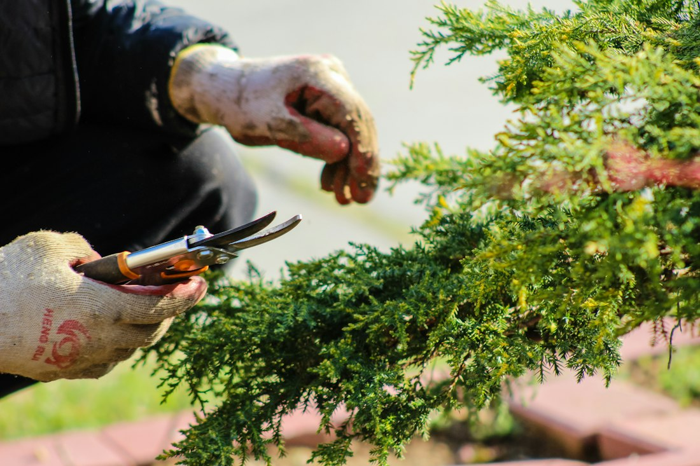
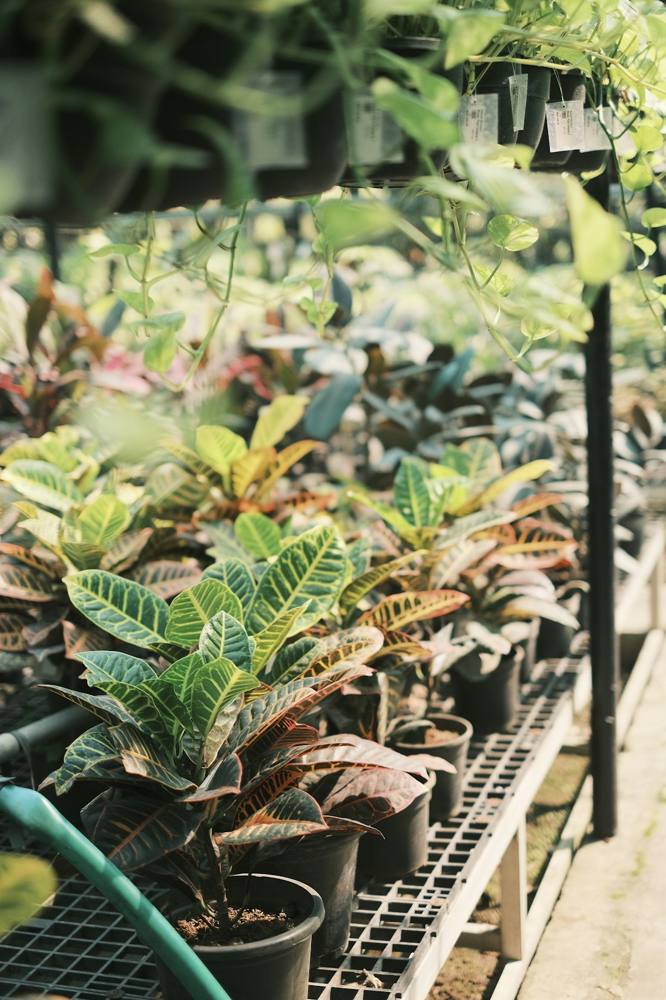
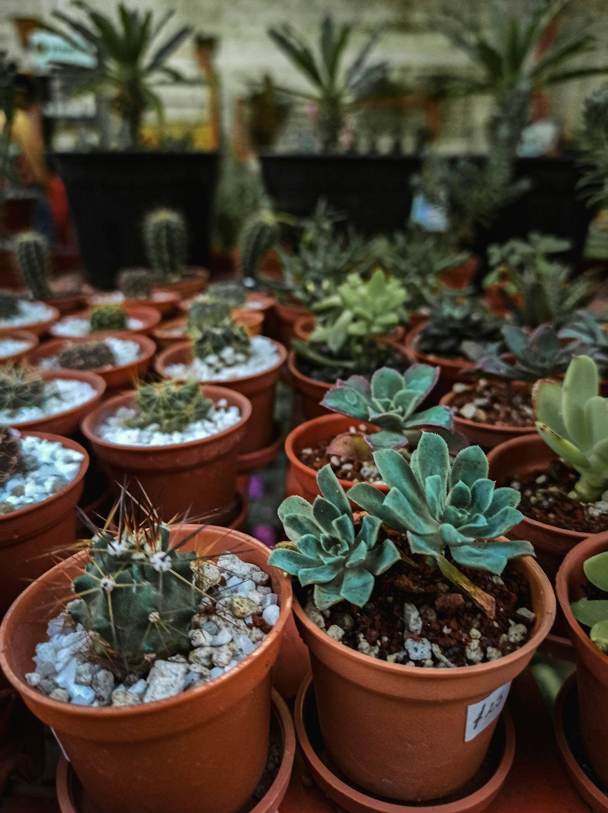

Projeto de paisagismo
Escolha das espécies, desenho dos canteiros e dos caminhos.
Paisagismo, jardinagem e viveiro em Porto Alegre. Do terreno limpo ao jardim pronto para usar.

Sobre nós
A Nature Paisagismo é um centro de jardinagem com loja de viveiro na Rua Casemiro de Abreu, no bairro Rio Branco, em Porto Alegre. Você escolhe as plantas na loja e a nossa equipe cuida do projeto, do plantio e da manutenção.
Plantas, mudas, vasos, terra e adubo para casa e jardim.
Jardins pensados para o tamanho, a luz e o uso de cada espaço.
Limpeza, preparo do solo, plantio e acabamento com a mesma equipe.
Um dos nossos trabalhos, registrado em três etapas.


Para casas, condomínios, comércios e áreas de lazer em Porto Alegre.
Escolha das espécies, desenho dos canteiros e dos caminhos.

Corte de grama, poda de arbustos e árvores, adubação e limpeza periódica.

Plantas ornamentais, mudas, folhagens e árvores para levar para casa.
Preparo do solo, plantio de grama, canteiros e piso de pedrisco.
Roçada, retirada de mato e de entulho verde.

Tudo para cuidar das plantas em casa.
“O pátio dos fundos estava tomado pelo mato. Hoje é o lugar preferido da família para o churrasco de domingo.”
“Comprei as plantas no viveiro e eles mesmos fizeram o plantio. Me explicaram como regar cada uma.”
“Contratamos a manutenção mensal do jardim do condomínio. Grama sempre cortada e canteiros bem cuidados.”
“Atendimento atencioso na loja e preço justo nas mudas. Sempre volto para buscar terra e adubo.”
Dúvidas frequentes
Não achou sua resposta? Fale com a gente pelo WhatsApp ou passe no viveiro.
Mande fotos e as medidas aproximadas do espaço pelo WhatsApp. Para projetos maiores, combinamos uma visita para avaliar o local.
Sim. Fazemos corte de grama, poda, adubação e limpeza em visitas avulsas ou periódicas.
Pode. A loja do viveiro é aberta ao público, com plantas, mudas, vasos, terra e adubo.
Sim. Atendemos casas, condomínios, comércios e áreas de lazer.
Depende do espaço e da rotina de cuidados. Na loja ajudamos a escolher espécies que se adaptam à luz e ao tempo que você tem para cuidar.
Na Rua Casemiro de Abreu, 707, bairro Rio Branco, em Porto Alegre - RS (CEP 90420-001).